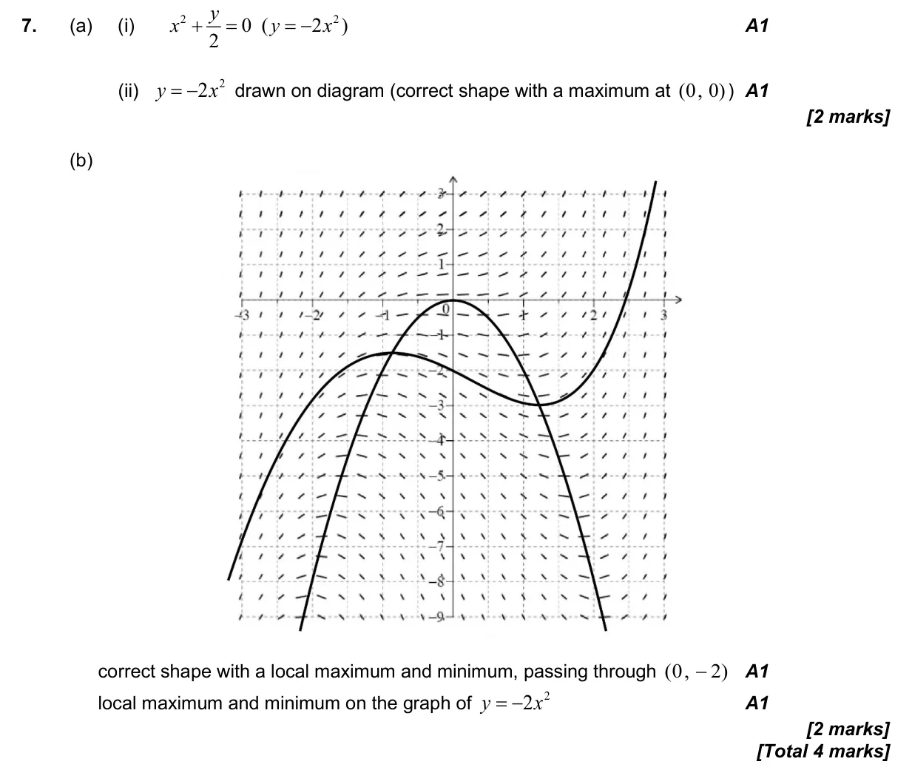

IB Math Question Bank
Course:
AA SL
Question Bank
Search all questions
2026
2025
2024
2023
2022
2021
Statistics
Exam statistics
Recency forecast
Long-term pattern
Syllabus
All syllabus topics
Topic 1: Numbers and Algebra
Topic 2: Functions
Topic 3: Geometry and Trigonometry
Topic 4: Statistics and Probability
Topic 5: Calculus
Practice
Formula Sheet
Home
/
2022
/
2022 May P1 TZ1 Q7
AI HL 2022 May P1 TZ1 Q7
4 marks - May P1 TZ1 - Mathematics: Applications and Interpretation HL
4 marks
P1
TZ1
Calculator
5.15 Slope fields
Question
Hide breakdown
a
b
Markscheme
